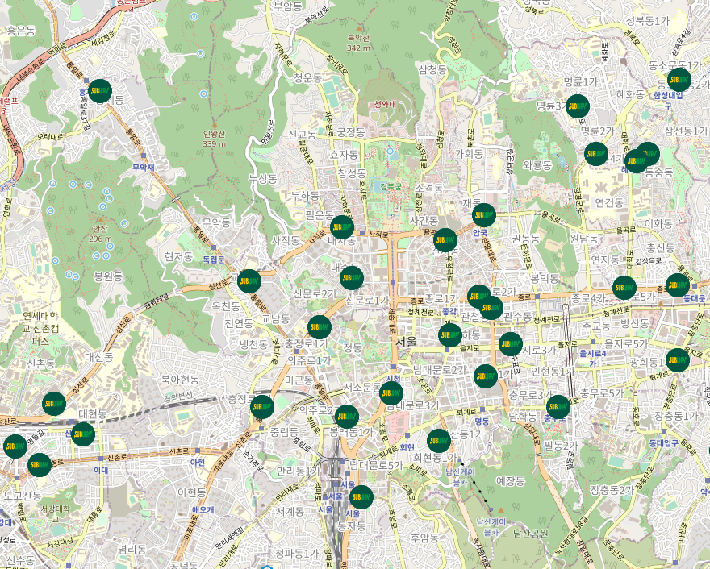
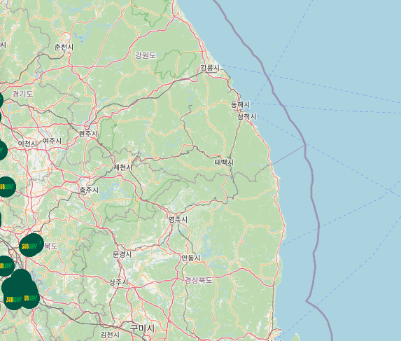
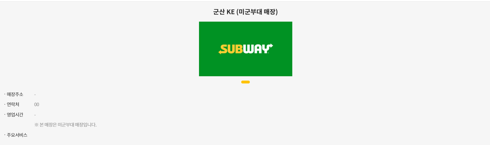

Salad & Sandwich Franchises Map
Made by Baek & Park
매장 수가 가장 많은데, 전국에 골고루 퍼져있기보다는 수도권, 주요도시에 집중된 정도가 심하다.
1등 강남구 16개
2등 종로구 14개
3등 중구 11개
유동인구와 학원이 많은 강남구가 예상가능하게 1등을 차지했다.
다음으로는 여러 회사들의 본사가 위치한 종로구와 중구. 서브웨이가 바쁜 직장인들의 끼니를 간단하고 건강하게 챙겨줄 수 있으리라..
강원도에는 매장이 아예 없다.
지역별 미군부대에 있는 10개 매장은 보안 상 문제인지 주소가 나오지 않는다.